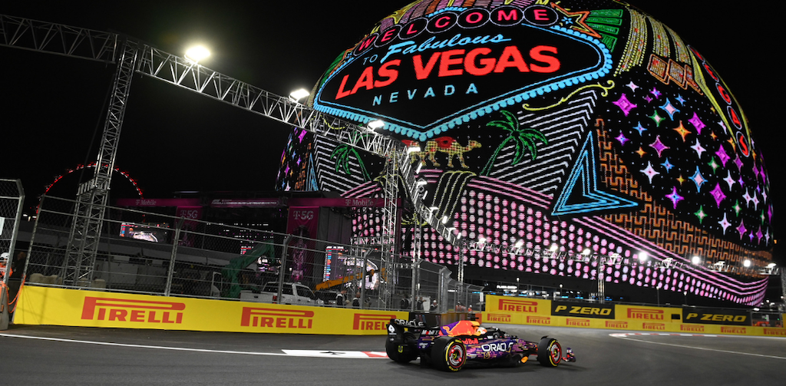
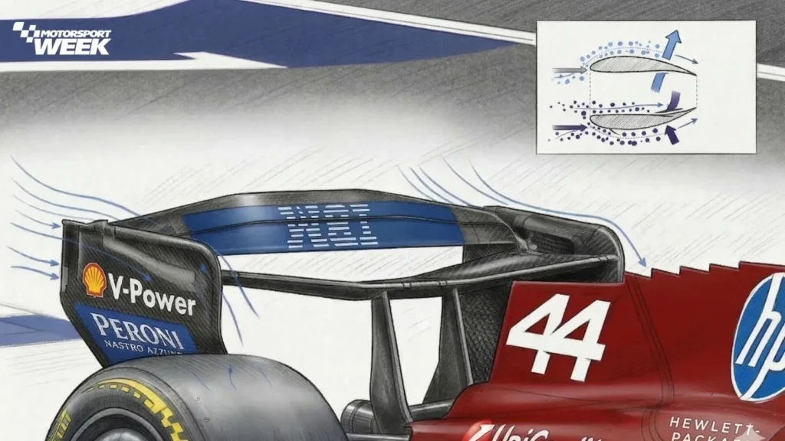

Lights Out
Live Story
Formula 1 Race Weekend


Pit Wall
Strategy Briefing
Soft tyre window
1.8s undercut gap
42 racing laps
Driver Focus
Onboard Moments
Track Map
Circuit Guide

Box this lap
Mechanics ready, tyres staged, and the pit lane delta is inside the target window.
Push now
Battery available, traffic clear, and the rival ahead is losing rear grip.
Telemetry
Interactive